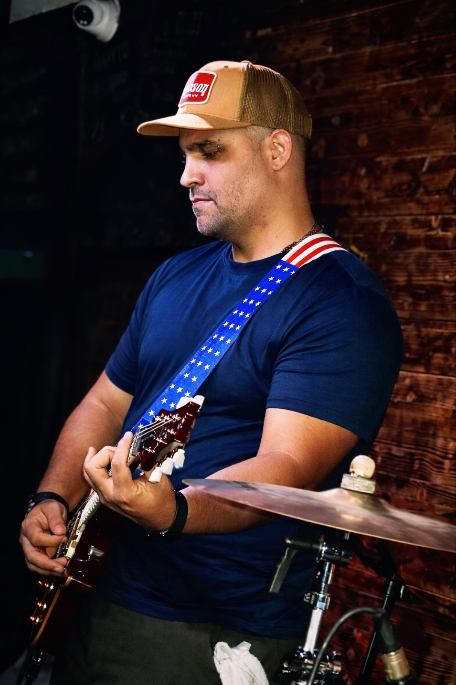

Malachias · Veterans Day 2026

San Antonio, Texas
WE GOT THE
INVITATION.
A Veterans Day stage — for the ones who need it most.
November 12, 2026
ROAD TO
SAN ANTONIO
Now we build the road to bring the full band there.
Help us bring the full band
THREE WAYS
TO WALK IT
1
DONATE
Cash App · Warfighter Gardens · $AWarriorsGarden
2
BUY MERCH
Wear the mission — every piece moves the road
3
SPONSOR
Businesses, churches, veteran-owned companies

Support through Cash App
WARFIGHTER GARDENS
$AWarriorsGarden
malachiasmusic.com/road-to-san-antonio
November 12 · San Antonio, TX